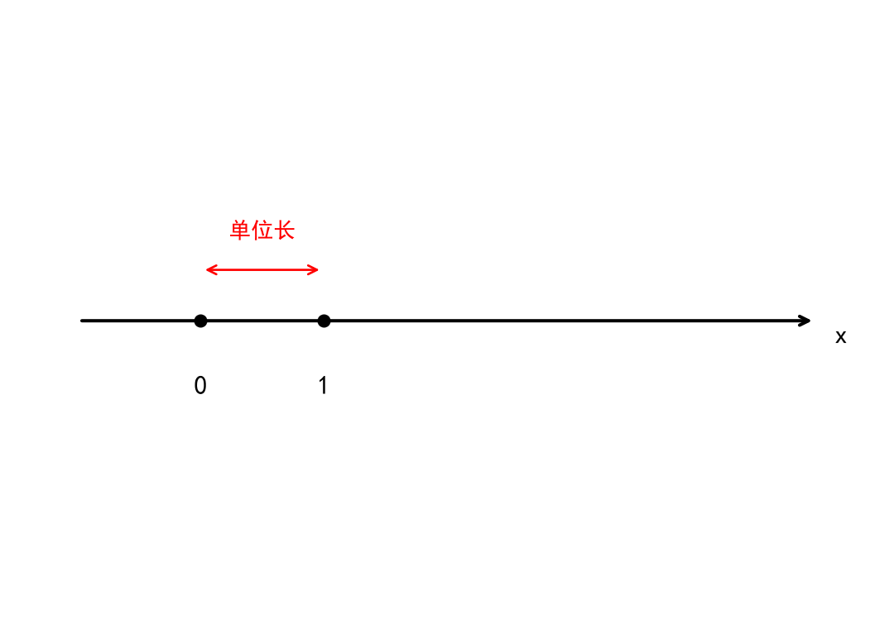

graph TD
A[十进制小数] --> B[有限小数]
A --> C[无限小数]
B -->|属于| D((有理数集 Q))
C --> E[循环小数]
C --> F[不循环小数]
E -->|属于| D
F -->|属于| G((无理数集 R\Q))
数学分析
极限
实数
整数与有理数
通常用 \(\mathbb{N}\) 表示自然数集 \[ \mathbb{N} = \{0,1,2,3,\cdots\} \] 自然数集对加法运算封闭 (定义 1) ，对减法运算不封闭
整数集对减法封闭 \[ \mathbb{Z} = \{0,\pm1,\pm2,\pm3,\cdots\} \] 整数集对乘法运算，对除法运算不封闭
在整数集中添加两个整数的商，就得到了有理数集 \[ \mathbb{Q} =\left\{\frac{p}{q}\middle|p,q \in \mathbb{Z},q \neq 0\right\} \] 它对加减乘除四则运算封闭，也称 \(\mathbb{Q}\) 为有理数域（定义 2）
有理数具有稠密性（定义 3）
定义 1 封闭性
设 \(S\) 是一个非空集合，\(\circ\) 是定义在 \(S\) 上的一种运算。
若 \(\forall a,b \in S ,都有 a \circ b \in S\)
则称集合 \(S\) 对该运算 \(\circ\) 是封闭的，或称 \(S\) 具有封闭性
定义 2 域
设 \(\mathbb{F}\) 是一个包含至少两个元素的集合，在 \(\mathbb{F}\) 上定义了两个运算：加法 \(\oplus\) 和乘法 \(\otimes\)。如果对于 \(\forall a,b,c \in \mathbb{F}\)，满足以下三大类域公理，则称 \(\mathbb{F}\) 为一个域。
（一）加法公理
- 封闭性：\(a \oplus b \in \mathbb{F}\)
- 交换律：\(a \oplus b = b \oplus a\)
- 结合律：\((a \oplus b)\oplus c = a \oplus(b \oplus c)\)
- 单位元：存在元素 \(0 \in \mathbb{F},\text{ s.t. }a \oplus 0 = a\)
- 逆元：存在元素 \(-a \in \mathbb{F},\text{ s.t. }a \oplus (-a) = 0\)
（二）乘法公理
- 封闭性：\(a \otimes b \in \mathbb{F}\)
- 交换律：\(a \otimes b = b \otimes a\)
- 结合律：\((a \otimes b) \otimes c = a \otimes(b \otimes c)\)
- 单位元：存在元素 \(1 \in \mathbb{F},\text{ s.t. }a \otimes 1 = a\)
- 逆元：若 \(a \neq 0\),则存在元素 \(a^{-1} \in \mathbb{F},\text{ s.t. }a \otimes a^{-1} = 1\)
（三）分配律
- 乘法对加法的分配律：\(a \otimes (b \oplus c)= a \otimes b \oplus a \otimes c\)
注记
这里的加法 \(\oplus\) 和乘法 \(\otimes\) 不一定是经典认知上的 \(+\) 和 \(\times\) ，而也可以是其他运算，加法单位元和乘法单位元也不一定是0和1，比如：对于正实数集 \(\mathbb{R}_+\),在其中定义加法及乘法运算为 \[ a \oplus b = ab\quad(a,b \in \mathbb{R}_+) \\ a \otimes b = a^b\quad(a,b \in \mathbb{R}_+) \] 可以验证这种情况下， \(\mathbb{R}_+\) 是一个域，其加法单位元为1，乘法单位元也为1。
定义 3 （狭义）稠密性 设 \(S\) 是实数集 \(\mathbb{R}\) 的一个子集。若 \[ \forall a,b \in S,a \neq b,\exists c \in S,\text{s.t.} a<c<b \] 则称集合 \(S\) 在 \(\mathbb{R}\) 中稠密，或者称 \(S\) 具有稠密性
十进制小数
实数域
实数域是对有理数域的扩充，除了对四则运算封闭外，还具有完备性(定义 4)。
同时，实数域还是一个有序域。
定义 4 设 \(X\) 和 \(Y\) 是实数集 \(\mathbb{R}\) 的两个非空子集，并满足对于任意 \(x \in X,y \in Y\), 有 \(x \le y\),那么 \(\exists c \in \mathbb{R},\text{s.t.}\forall x \in X,y \in Y,x \le c \le y\).
定义 5 序公理 设 \(\mathbb{R}\) 是一个域，如果在 \(\mathbb{R}\) 上定义了一个二元关系“ \(\le\) ”,且对于任意 \(a,b,c \in \mathbb{R}\),满足以下四条规则，则称 \(\mathbb{R}\) 为一个有序域
- 三岐性：\(\forall a,b \in \mathbb{R}\)，有且满足以下三个式子之一： \[ a < b,a = b,a > b \]
- 传递性：若 \(a \le b,b \le c\),那么 \(a \le c\).
- 加法保序性：若 \(a \le b,c \in \mathbb{R}\)，那么有： \[ a + c \le b + c \]
- 乘法保序性：若 \(a \le b,c \in \mathbb{R},c > 0\),那么有： \[ a \cdot c \le b \cdot c \]
定义 6 阿基米德公理
\[ \forall a,b > 0,\exists n \in \mathbb{N},\text{s.t.}\quad n \cdot a > b \]
数轴
在直线 \(l\) 上标定一个原点，并规定一个正方向，取一个长度为单位长。 指定了原点、方向和单位长的直线称为数轴。

数轴上的点与实数一一对应,与点对应的数也称点的坐标
数轴上一点 \(A\) 到原点 \(O\) 的距离就是对应实数的绝对值 \(|a|\).绝对值满足
- \(|a| \ge 0\),当且仅当 \(a = 0\) 时等式成立，即正定性。
- \(|a - b| = |b - a|\),即对称性。
- \(\lvert |a| - |b| \rvert \le |a + b| \le |a| + |b|\),即三角不等式。
设 \(a,b \in \mathbb{R},a < b\)，集合 \((a,b)=\{x \in \mathbb{R}|a < x < b\}\) 称为以 \(a,b\) 为端点的开区间，集合 \([a,b] = \{x \in \mathbb{R}|a \le x \le b\}\) 称为以 \(a,b\) 为端点的闭区间，同样可以定义半开半闭区间 \[ (a,b] = \{x \in \mathbb{R}|a < x \le b\},\quad[a,b) = \{x \in \mathbb{R}|a \le x < b\} \]
记号“\(\infty\)”称为“无穷”，“\(+\infty\)”称为“正无穷”，“\(-\infty\)”称为“负无穷”，无穷不是一个数。
以一个点为中心的开区间 \((a - \delta,a + \delta) = \{x| |x - a| < \delta\}\)，称为 \(a\) 的一个邻域，记作 \(U(a,\delta)\),而用 \(\{x|0<|x-a|<\delta\}\) 表示去心邻域，记作 \(\mathring{U}(a,\delta)\),有时用它来刻画在点 \(a\) 附近。